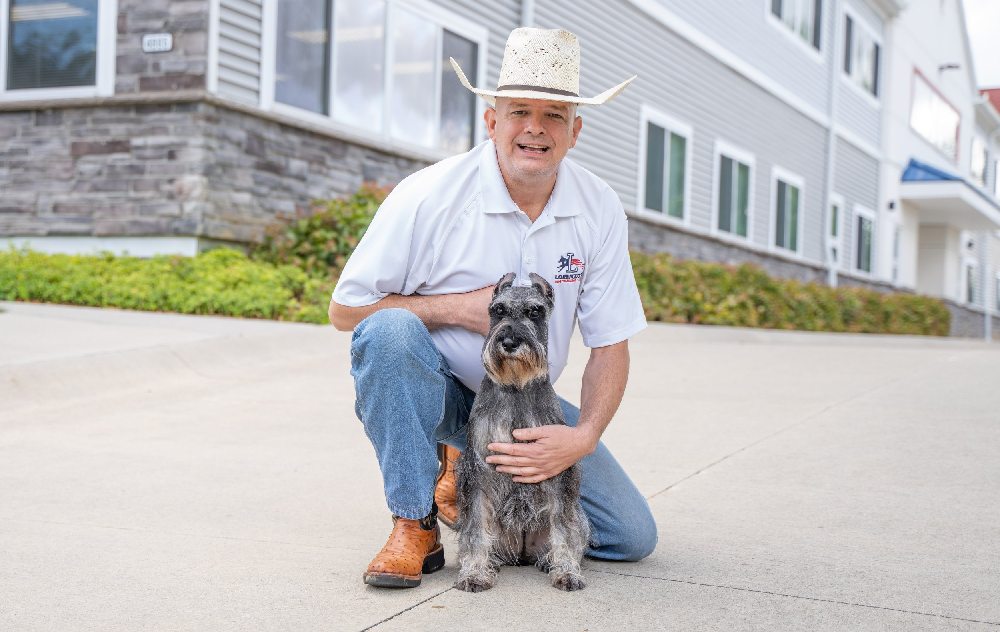

Eric Hardaway
Fort Worth, TX
Eric's psychology background, wildlife work, and experience training his own German Shepherd led him to serve the Dallas/Fort Worth area.

Fort Worth, TX
Eric's psychology background, wildlife work, and experience training his own German Shepherd led him to serve the Dallas/Fort Worth area.
Eric Hardaway FORT WORTH, TX Eric was born and raised around the Eagle Mountain Lake area of Fort Worth, Texas. He attended and graduated high school at Marine Military Academy in Harlingen, Texas before heading to Texas Tech University to further his education and to graduate with a degree in Psychology. After earning his degree, he began a career as a Wildlife Specialist with Critter Control helping to protect animals from people, and people from animals.
At this time, his best friend and business partner, Bacon, came into his life. Bacon, a rescued German Shepherd, needed training so Eric spoke with his veterinarian who recommended Lorenzo’s Dog Training Team and their team trainer Matthew Watson. Working together with Matthew, Eric was passionate about learning how to train his dog, and he kept asking his trainer to teach him more training techniques.
Matthew embraced the desire of his client by inviting Eric to join the team, and the rest is history. Today, Eric and Bacon can be found around the Dallas/Fort Worth Metroplex looking for and helping dogs and their owners every chance they get. Eric’s love of animals and his dedication to keeping dogs out of shelters is evident when you meet him.
He is very proud to be a part of Lorenzo’s Dog Training Team, and he encourages you to call if you need any assistance with your dog.
Send your request directly to Lorenzo's office with Eric Hardaway already assigned as the source trainer.